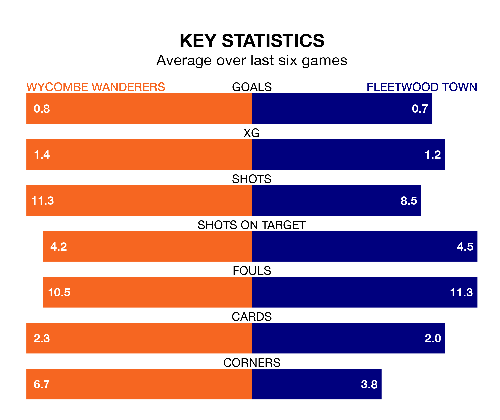

Wycombe Wanderers are heavy favourites to keep all three points at home in Saturday's kick-off against Fleetwood Town.
The Chairboys, who sit 17th in EFL League One with 27 games played, are priced at 1.6 to seal victory at Adams Park.
Sitting seven places and 12 points behind them in the table, Fleetwood are 4.2 to win with *Betting Company*, while the draw is at 3.4.
Wycombe are in disappointing form in EFL League One, with one win and three draws from their last six games.
With no wins and a draw over that period, Fleetwood's form is worse – they have taken one point from 18, compared to Wanderers' six.
In the last 10 years, Wycombe and Fleetwood have played each other on 11 occasions. Wycombe won five of them, Fleetwood one, and they drew five times.
On average, the Chairboys scored 1.8 goals and the Cod Army 1.0 in those matches.
Their last meeting was on October 7, when Wycombe won 4-1 away.
With 23 goals in 27 games so far this season, Town are scoring at below the league average rate with 0.9 goals per game. And they are conceding more than average, letting in 48 goals at a rate of 1.8 per game.
The Chairboys are also below average scorers, with 1.1 goals per game, compared to a league average of 1.3. They have conceded 1.3 goals per game.
Wycombe's last match was on Tuesday, a 1-0 loss against Wigan Athletic.
Fleetwood lost 1-0 against Portsmouth last time out, on January 20.
Saturday's match will be refereed by Lee Swabey, who has taken charge of seven EFL League One games so far this season, issuing one red card and booking 40 players. He has not awarded any penalties.
The last Wycombe game Swabey refereed was a 2-1 away win against Bristol Rovers on August 26. His last Fleetwood match was their 1-0 loss away at Derby County on August 19.
Updated: 09:07 (UTC), 24/01/24